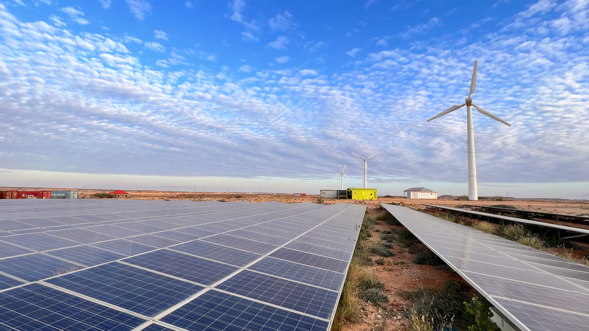
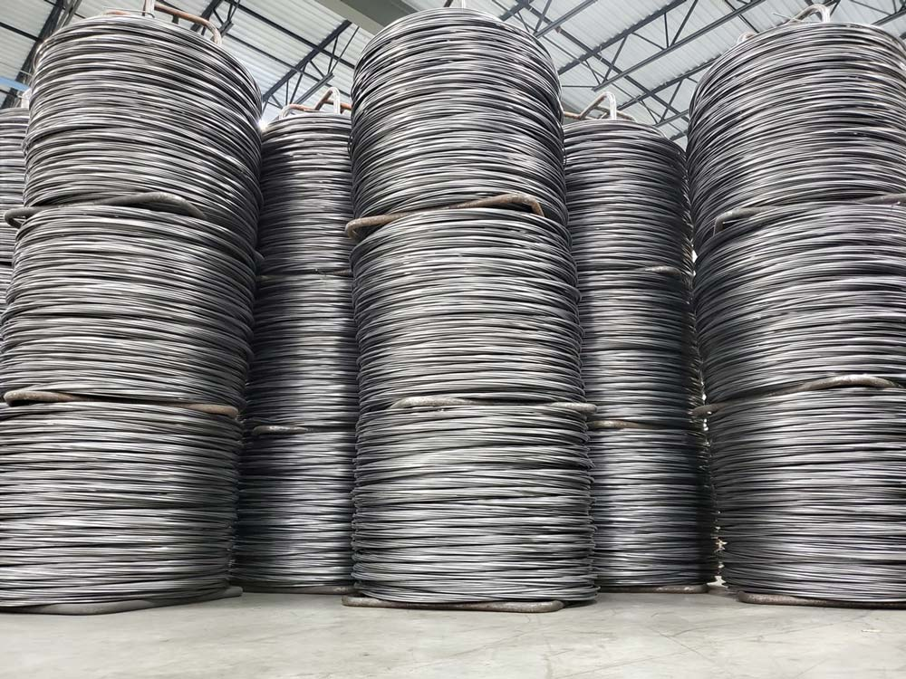

About Kestrel Metal
Born in the
Wire Mesh Capital.
Built on Quality.
We built one of Anping's most trusted manufacturing operations by moving faster, staying leaner, and refusing to compromise on quality. Now we're applying that same instinct to something bigger.
Same drive. New frontier.
We built our reputation by challenging how wire mesh has always been manufactured — and have become one of the most trusted suppliers in the industry, delivering to 30+ countries across 6 continents. Now we're expanding into advanced manufacturing, sustainable production, and custom engineering solutions that the world needs.
Learn more about our ESG commitmentThree Pillars, One Standard
From raw wire to finished infrastructure, we control every stage of the process. That's how we guarantee quality at scale.

Wire Mesh Manufacturing
Nearly 50,000 tonnes of wire mesh products move through our production lines every year. That's not just scale — it's leverage. It funds our R&D. Tests our technology. Proves what works under real pressure.
Learn more
Fencing & Security
We're building the fencing solutions the world needs — from perimeter security to agricultural enclosures. Engineered for the harshest environments, delivered with precision. No shortcuts.
Learn more
Custom Engineering
Real change comes from innovation. Through our R&D center, we drive custom solutions the industry needs — from specialized alloys to bespoke mesh configurations. We prove it on our own lines first.
Learn moreA world where infrastructure is built with materials that last, manufactured responsibly, and delivered with integrity — creating lasting value for people and the planet.
Our Purpose
To accelerate the adoption of high-performance metal products globally — rapidly, responsibly and profitably.
Our Core Values
These aren't words on a wall. They're why we're here, and how we build every product that leaves our facility.
Quality
Family
Integrity
Stretch Targets
Safety
Frugality
Empowerment
Enthusiasm
Courage
Humility
Quality means everything.
So does how we make it.
We don't just meet standards — we set them. ISO 9001 certified, CE marked, and committed to sustainable manufacturing practices across every production line.
Company Milestones
From a small workshop to a global operation — here's how we got here.
Company Founded
Kestrel Metal was established in Anping, Hebei, China, starting as a small wire mesh workshop with a big vision.
Export to Europe
Began exporting products to European markets, marking the start of our international journey and proving our quality meets the highest global standards.
New Production Facility
Relocated to a modern 20,000 sqm production facility with automated manufacturing lines, doubling our capacity.
ISO & CE Certification
Achieved ISO 9001 and CE certifications, validating our quality management system and product compliance across global markets.
30+ Countries Served
Expanded global reach to serve customers in over 30 countries across 6 continents, with dedicated teams in key markets.
Advanced R&D Center
Launched our dedicated R&D center with 60+ specialists, driving innovation in coating technologies, alloy formulations, and sustainable manufacturing.
Ready to Build
Something Together?
Let's discuss your project requirements and explore how Kestrel Metal can deliver the solutions you need.